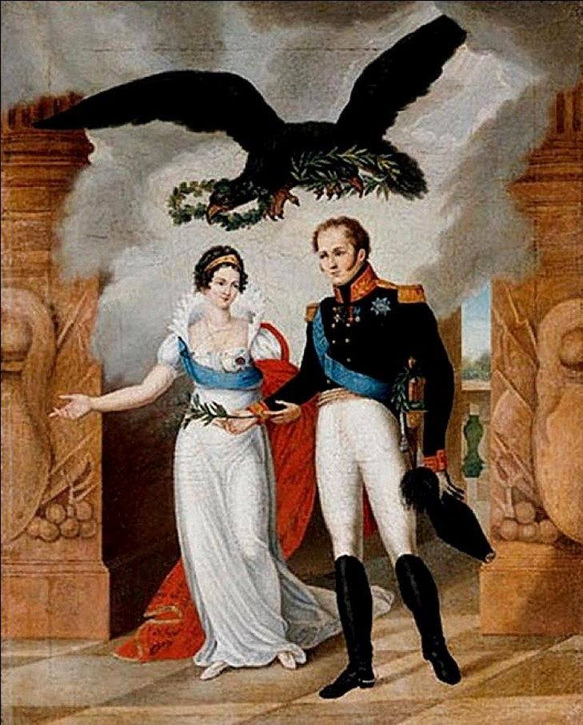
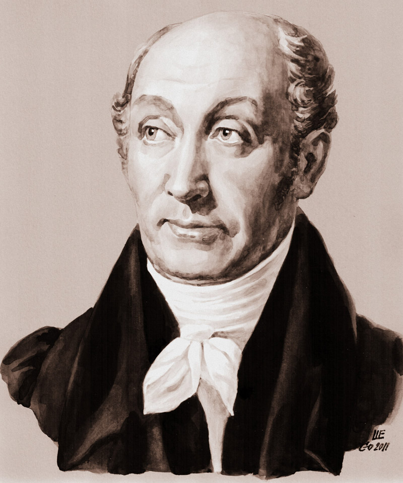
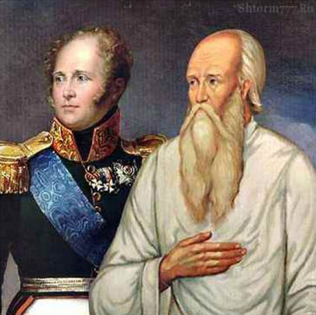

Александр I:
реформаторские замыслы и проблемы их осуществления.
В преобразованиях царствования Александра I выделяют несколько этапов.
1801—1803гг. Этот этап связан с деятельностью Негласного комитета, не имевшего
официального статуса кружка молодых друзей царя П. А. Строганова, Н. Н.
Новосильцева, В. П. Кочубея и А. Чарто-рыйского.
Обсуждались три вопроса — крестьянский, о реформах государственного аппарата и
о мерах в области просвещения:
— указ о «вольных хлебопашцах» (1803) разрешил помещикам отпускать на волю
крестьян с землей и за выкуп (этим указом смогли воспользоваться не более 0,5%
крепостных);
— в 1802 г. вместо коллегий были учреждены восемь (позднее двенадцать)
министерств. Министров назначал царь, вводился принцип единоначалия, призванный
повысить эффективность центральных органов управления;
— указом 1803 г. вводилась единая система учреждений образования: одноклассные сельские училища, трехклассные уездные
училища, шестиклассные губернские гимназии, университеты. Устав 1804 г. давал
университетам широкую автономию, запрещал властям и полиции вмешиваться в дела
университетов;
— в 1804 г. был принят самый либеральный в истории России цензурный устав.
С осени 1803 г. значение Негласного комитета стало падать, в 1805—1807 гг.
внимание царя занимали главным образом внешнеполитические проблемы (войны с
Наполеоном).
1809—1812 гг. Этот этап связан с деятельностью Сперанского, занявшего
должность статс-секретаря и своим возвышением обязанного лично монарху (в
отличие от «молодых друзей» начала царствования, Сперанский, происходивший из
семьи сельского священника, не имел никаких связей в высшем свете). По проекту
Сперанского, которого лицейский однокашник Пушкина М. А. Корф назвал «светилом
русской администрации», предполагалось:
— осуществить принцип разделения властей на законодательную, исполнительную
и судебную;
— создать систему представительных учреждений — выборных волостных,
окружных, губернских дум, которую венчала бы Государственная дума, высший законодательный
орган страны;
— функции высшей судебной инстанции передать Сенату;
— уточнить функции и порядок деятельности министерств, усилить их
ответственность как высших органов исполнительной власти;
— учредить Государственный совет — совещательный орган при императоре,
связующее звено между монархом и законодательными, исполнительными, судебными
органами империи;
— у императора оставалась вся полнота исполнительной власти, он обладал
исключительным правом законодательной инициативы, мог распускать Государственную
думу, назначал членов Государственного совета;
— разделить все население России на три сословия — дворянство, «среднее
состояние» (купцы, горожане, государственные крестьяне), «народ рабочий»
(крепостные крестьяне, прислуга, мастеровые). Все сословия обретали гражданские
права, а первые два — политические права (в частности, избирательное право).
Вопрос об отмене крепостного права не рассматривался, реформу
предполагалось завершить к 1811г. Из предложенных Сперанским мер осуществлена
была одна — в 1810 г. создан Государственный совет. Сам Сперанский в начале
1812 г. был сослан в Нижний Новгород. Сопротивление дворянства и чиновничества
проектам «выскочки-поповича» было действительно ожесточенным. Сыграла роль и
«Записка о древней и новой России», поданная историком Н. М. Карамзиным сестре
императора Екатерине Павловне: «Всякая новость в государственном порядке есть
зло...» — говорилось в ней.
1818—1820 гг. Это были последние попытки обсуждения крестьянского вопроса и
вопроса о государственном правлении:
— в 1818 г. царь поручил Н. Н. Новосильцеву разработать конституцию для
введения ее в России. К 1820 г. была готова Уставная грамота Российской
империи. Согласно этому проекту, Россия становилась федерацией, вводились
гражданские права и свободы и ограниченное народное представительство.
Учреждалась конституционная монархия;
— в 1818 г. Александру I был подан подготовленный по его поручению проект
отмены крепостного права. Его разработал ближайший сподвижник последнего
десятилетия его царствования А. А. Аракчеев.
Оба проекта остались секретными, к их реализации Александр I даже не
приступил. В 1820— 1821 гг. восторжествовал реакционный курс, обычно
называемый аракчеевщиной. С планами реформ было покончено. Помещикам
подтвердили право ссылать крестьян в Сибирь. Расширялись военные поселения,
созданные в 1815—1819гг. Поселяне должны были соединять военную службу с
земледельческим трудом. Муштра на плацу дополнялась мелочным надзором
начальников, следивших за пахотой и севом. Военные поселения стали своеобразным
символом последнего периода царствования Александра I, все более замыкавшегося
в себе, отдалившегося от повседневных забот, «подернутого каким-то нравственным
туманом». 19 ноября 1825 г. царь умер.
25 декабря члены Северного тайного общества привели солдат на Сенатскую
площадь, требуя конституцию, представительное правление, гражданские свободы, —
то, о чем мечтал при вступлении на престол Александр I. Это совпадение не
случайно. Среди важнейших предпосылок возникновения тайных обществ реформаторские
замыслы власти занимали далеко не последнее место. «Не мне их судить», — будто
бы произнес Александр I, получив информацию об антиправительственном заговоре.
Отказ от преобразований породил раскол между передовым обществом и властью —
раскол, ставший одним из важных факторов российской истории XIX и XX вв.
Россия в
I четверти XIX века.
В первой половине
XIX века Россия была одной из крупнейших европейских держав. Её территория
составляла около 18 млн. квадратных километров, а население превышало 70 млн.
человек.
Основу экономики
России составляло сельское хозяйство. Крепостные крестьяне были самой
многочисленной категорией населения. Земля являлась исключительной
собственностью помещиков или государства.
Промышленное
развитие России, несмотря на общее увеличение количества предприятий примерно в
5 раз, было невысоким. В основных производствах применялся труд крепостных
крестьян, который был мало рентабелен. Основу промышленности составляли
кустарные крестьянские промыслы. В центре России существовали крупные
промышленные села (на прим. Иваново). В это время значительно возросло
количество промышленных центров. Это сказывалось на росте городского населения.
Самыми крупными городами являлись Санкт-Петербург и Москва.
Развитие добывающей
и текстильной промышленности привело к интенсификации торговли как внутри
страны, так и на внешнем рынке. Торговля имела преимущественно сезонный
характер. Главными торговыми центрами являлись ярмарки. Их количество в тот
период доходило до 4000.
Транспорт и система
путей сообщения были слабо развиты, и также носили в основном, сезонный
характер: летом преобладал водный путь, зимой - санный.
Император Александр
I.
 Первая четверть XIX
века - это эпоха правления Александра I (1801 - 1825 г.г.).
Александр Павлович родился 12.12.1777 года и умер 19.11.1825 года. Император
Всероссийский с 12.03.1801 года по 19.11.1825 года. Александр I - старший сын
императора Павла I и его второй жены императрицы Марии Федеровны.
В 1793 его женили на принцессе Луизе Баденской (в православии
Елизавета Алексеевна), которая пользовалась симпатией русского общества, но не
была любима мужем.
Он взошел на
престол в результате заговора, при котором был убит император Павел I. Этот
период истории России характеризуется борьбой двух направлений во внутренней
политике: либерального и консервативного. Вдохновителем либерального,
господствовавшего в 1810 - 1810 г.г. и 1815 - 1820 г.г. был М. М. Сперанский, сторонник идеи правового
государства, ограничения самодержавия рамками закона. Сам Александр I,
воспитанный швейцарским политическим деятелем Ф. С. Лагарпом,
приглашенным Екатериной II, республиканцем по убеждению, который внушал идеи
либерализма будущему императору, в молодые годы увлекался идеями Монтескью и Руссо.
Александр был умен,
и во время своего правления не мог не считаться с духом времени, и в первую
очередь с влиянием идей Французской революции. Более того, некоторые из этих
идей он использовал в своей государственной деятельности .
С воцарением нового
монарха были связаны надежды на проведение либеральных реформ в России, отказ
от деспотических методов правления, свойственных императору Павлу I. Однако
теоретические мысли о свободе и равенстве он не отделял от самодержавной формы
правления. Половинчатость стала особенность преобразований Александра I.
Реформы в
государственном управлении.
Система
государственного управления Российской империи в начале XIX века.
Александр I взошел
на российский престол, намереваясь осуществить радикальную реформу
политического строя России путем создания конституции, гарантировавшей всем
подданным личную свободу и гражданские права. Он сознавал, что подобная
"революция сверху" приведет фактически к ликвидации самодержавия и
готов был в случае успеха удалиться от власти. Однако он также понимал, что
нуждается в определенной социальной опоре, в единомышленниках. Ему необходимо
было избавиться от давления как со стороны заговорщиков, свергнувших Павла, так
и поддерживавших их "екатерининских стариков". Уже в первые дни после
воцарения Александр объявил, что управлять Россией будет "по законам и по
сердцу" Екатерины II. 5 апреля 1801 был создан Непременный
(Государственный) совет - законосовещательный орган при государе, получивший
право опротестовывать действия и указы царя. Председатель совета и его члены назначались
самим царем. Он централизовал законодательную деятельность, упорядочил введение
новых юридических норм. Таким образом, в ходе реформ, структура власти в России
максимально приблизилась к европейской. Наряду с выделением судебных органов,
которое произошло при Екатерине II, теперь оформилась исполнительная власть и
появились зачатки будущей законодательной. Хотя все ветви власти и были
замкнуты на императоре, а законодательной, как самостоятельной сферы
политической деятельности, еще не существовало, Россия сделала новый
значительный шаг к разделению властей. Однако общество по прежнему не имело
никаких каналов влияния на систему власти и полностью зависело от бюрократии.
Были предприняты не6которые меры по борьбе с бюрократией. Так в 1809 году был принят
указ царя о введении экзамена на чин. От экзамена освобождались те чиновники,
которые закончили университет в России. К остальным предъявлялись следующие
требования: знание русского языка и одного из иностранных, владение основами
естественного, римского и гражданского права, уголовного права, знания по
истории России и всемирной истории, овладение основами естествознания,
математики, географии и физики. Этот указ был воспринят с неудовольствием. Но,
к сожалению, принятые меры не были достаточно эффективными.
Попытки
проведения реформ в земельном укладе страны.
Необходимость
изменения в земельном укладе страны также была очевидна. В мае того же года
Александр внес на рассмотрение совета проект указа о запрещении продажи
крестьян без земли, но члены Совета дали понять императору, что принятие
подобного указа вызовет брожение среди дворян и приведет к новому
государственному перевороту. После этого Александр сосредоточил свои усилия на
разработке реформы в кругу своих "молодых друзей" (В. П. Кочубей, А. А.
Чарторыйский, А. С. Строганов, Н. Н. Новосильцев). Ко времени коронации
Александра (сентябрь 1801) Непременным советом были подготовлены проект
"Всемилостивейшей грамоты, Российскому народу жалуемой", содержавшей
гарантии основных гражданских прав подданных (свобода слова, печати, совести,
личная безопасность, гарантия частной собственности и т. д.), проект манифеста
по крестьянскому вопросу (запрет продажи крестьян без земли, установление
порядка выкупа крестьян у помещика) и проект реорганизации Сената. В ходе
обсуждения проектов обнажились острые противоречия между членами Непременного
совета, и в результате ни один из трех документов обнародован не был. Было лишь
объявлено о прекращении раздачи государственных крестьян в частные руки.
Дальнейшее рассмотрение крестьянского вопроса привело к появлению 20 февраля
1803 указа о "свободных хлебопашцах", согласно которому помещики
могли отпускать крестьян за выкуп и закреплять за ними землю в собственность,
что впервые создавало категорию лично свободных крестьян. В 1804 - 1805 годах
была начата крестьянская реформа в прибалтийских землях. Эти преобразования
свидетельствовали о серьёзных намерениях императора. Однако результаты первой
меры были ничтожны, так как её осуществление основывалось на доброй воле помещиков,
а вторая реформа осталась локальной.
Таким образом,
крепостное право сохранилось. С введением военных поселений на казенных землях
ряда губерний ухудшилось положение государственных крестьян. Фактически они
потеряли личную свободу, должны были жить в одинаковых домах, по команде
вставать, выходить на работу и ложиться спать. Положение же помещичьих
крепостных было еще хуже. В особенно тяжелом положении была деревня. Рост
задолженности помещиков привел к тому, что к 1859 году в государственных кредитных
учреждениях было заложено 65% всех крепостных крестьян.2
Реформа системы
образования.
В 1803 году был
утверждено новое положение об устройстве учебных заведений. Вводилась
преемственность между школами различных ступеней - приходскими, уездными
училищами, гимназиями, университетами. В дополнение к московскому университету
было основано еще пять: Дерптский, Виленский, Харьковский, Казанский, Петербургский.
Санкт-Петербургский университет, один из центров науки и культуры России, был
основан в 1819 году на базе Главного педагогического института. Официальное
открытие университета состоялось в 1820 году. Он разместился в бывшем здании
Двенадцати коллегий, построенном на Васильевском острове еще при Петре I.
Первоначально в университете было три факультета, а в 1854-1914 гг. - четыре
факультета: историко-филологический, философско-юридический,
физико-математический и восточный. С 1860 года в университете действовали курсы
для подготовки учителей средней школы. За первые 50 лет существования
университета полный его курс окончили свыше 2 тыс. человек.
По Уставу все
университеты получили значительную автономию: право выбирать ректора и
профессоров, самостоятельно решать свои хозяйственные вопросы. В том же 1804
году был издан достаточно либеральный по характеру цензурный устав. Надо
отметить, что правление Александра I отличалось самой широкой веротерпимостью.
Важно отметить, что теперь в учебные заведения могли быть приняты представители
всех сословий, на низших ступенях обучение было бесплатным, то есть оплачивалось
из государственного бюджета.
Реформа системы
государственного управления.
В 1802 году
созданные еще при Петре I коллегии были заменены министерствами, в которых
вводилось строгое единовластие министра. Это было очень важно для развития
западного (капиталистического) уклада. Началось составление единого бюджета
государства, но из-за значительного дефицита, бюджет был строго секретным.
Отчитывался министр непосредственно перед императором и от него же получал
распоряжения по важнейшим вопросам. Для совместного обсуждения министрами
второстепенных дел был создан Комитет министров (в 1857 г. он был преобразован
в Совет министров, просуществовавший до 1917 г.). Первоначально было образовано
восемь министерств: военное, морское, внутренних дел, иностранных дел, юстиции,
финансов, коммерции (оно вскоре было ликвидировано) и народного просвещения. В
1810-1811 гг. при реорганизации министерств их количество увеличилось, а
функции были ещё более чётко разграничены. Эта мера завершила процесс
разграничения функций органов государственного управления. Она привела к
утверждению системы отраслевого управления, смене коллегиальности на
единоначалие, к прямой ответственности министров перед императором, усилению
централизации и укреплению самодержавия. В России начала быстро складываться
прослойка бюрократии, всецело зависящей от милости царя и получаемого за службу
жалованья.
Изменения в системе
государственного управления не могли не отразится на положении православной
церкви которая во многом была частью государственного аппарата. Высшее
церковное правительство - Синод - по своему устройству было подобием петровских
коллегий: поскольку во всех отраслях государственной жизни утвердилось единозначие, пришедшее на смену коллегиальности, то
подобные процессы не могли не затронуть и сферу церковного управления. Здесь
единовластным начальником становится государственный чиновник - обер-прокурор,
который в XVIII веке лишь наблюдал за действиями и законностью решений Синода.
В эти же годы сам
Александр уже почувствовал вкус власти и стал находить преимущества в
самодержавном правлении. Разочарование в ближайшем окружении заставило его
искать опору в людях, лично ему преданных и не связанных с сановной
аристократией. Он приближает к себе сначала А. А. Аракчеева, а позднее М. Б. Барклая
де Толли, ставшего в 1810 году военным министром, и М. М. Сперанского, которому
Александр поручил разработку нового проекта государственной реформы.
Проект М. М. об общественно-политическом устройстве России. Спиранского
 М. М. Сперанский
был видным политическим деятелем тех лет. Сын бедного сельского священника, он
обладал блестящими способностями и в короткий срок сделал стремительную карьеру
и в 1807 году стал ближайшим советником императора. Свой проект коренной
реформы общественно-политического устройства России он изложил в документе,
который назывался "Введение к уложению государственных законов" (1809
г.). Он предложил:
1. Внести в закон
понятие политических и гражданских прав, но не для всех. Крепостным крестьянам,
помещичьим рабочим по найму, домашним слугам не предполагалось предоставить
гражданские права. Но, в то время и на Западе еще было далеко до всеобщности
гражданских прав, а в Америке существовало рабство. Важно то, что возможность
влиять на систему власти получили бы не только высшие, но и средние слои.
2. Обеспечить
разделение властей и общества, обладающего гражданскими правами, к управлению.
Судебная власть признавалась полностью независимой и подчинялась Сенату.
Законодательную власть должны были представлять выборные местные думы и
центральна Государственная дума. Исполнительная же власть подчинялась
законодательной. Она была представлена министерствами в центре и местными
органами управления внизу. Средоточием всех властей являлся император.
3. Провозглашалось
правовое государство, то есть правит закон, а не люди.
4. Предполагалось
ввести выборность чиновников, а из этого следовала их ответственность перед
обществом.
Вся система
государственного управления, по этому проекту, строилась снизу вверх.
Предполагалось, что население будет выбирать местные думы. Собираясь раз в три
года, думы в свою очередь, должны выбирать членов правления, которым
предлагалось вести местное хозяйство до следующего собрания, а также выбирать
представителей в вышестоящие думы (волостная - в окружную, окружная - в
губернскую, губернская - в центральную). Доказывая необходимость подобной
реформы, М. М. Сперанский утверждал, что Россия движется к неминуемой
общественной катастрофе, о чем свидетельствует падение престижа власти в
народе. Но характерно то, что М. М. Сперанский не предусматривал отмены
крепостного права, однако взаимоотношение крестьян с помещиком предполагалось
регламентировать законом. Но, к сожалению, этот проект остался только на
бумаге.
Практически, проект
Сперанского предполагал фактическое преобразование России в конституционную
монархию, где власть государя была бы ограничена двухпалатным законодательным
органом парламентского типа. Реализация плана Сперанского началась в 1809,
когда была отменена практика приравнивания придворных званий к гражданским и
был введен образовательный ценз для гражданских чиновников.
Учреждение
Государственного совета.
1 января 1810 был
учрежден Государственный совет, заменивший Непременный. Предполагалось, что
изначально широкие полномочия Государственного совета будут затем сужены после
учреждения Государственной думы. В течение 1810-11 в Государственном совете
обсуждались предложенные Сперанским планы финансовой, министерской и сенатской
реформ. Реализация первой из них привела к сокращению бюджетного дефицита, к
лету 1811 было завершено преобразование министерств. Между тем сам Александр
испытывал сильнейшее давление придворного окружения, включая членов его семьи,
стремившихся не допустить радикальных реформ.
Немаловажное
значение имел фактор и международного положения России: усиливавшееся
напряжение в отношениях с Францией. Россия, будучи в составе антинаполеоновской коалиции, была в состоянии войны с
Францией с 1805 г. В Европе находились российские войска, которые принимали
участие в военных действиях, но Франция неизменно одерживала победу над ними. В
1807 году в Тильзите был заключен мирный союзный договор между Россией и
Францией. Все эти обстоятельства нанесли серьезный удар по международному
престижу России и патриотические чувства русских были оскорблены. Необходимость
подготовки к войне давали возможность оппозиции трактовать реформаторскую
деятельность Сперанского как антигосударственную, а самого Сперанского объявить
наполеоновским шпионом. Все это привело к тому, что склонный к компромиссам
Александр, хотя и не веривший в вину Сперанского, в марте 1812 отправил его в
отставку и сослал сначала в Нижний Новгород, а затем - в Пермь (в последствии
он был помилован). Император, весьма ревниво относившийся к своей власти, не
был готов к новым идеям своего советника.
Военная реформа. Ведение военных
поселений.
В 1816 году
началась военная реформа. Александр, желая сократить расходы на содержание
армии, начал введение военных поселений. Военные поселения должны были
заниматься одновременно земледелием и военной службой. Они, как уже было
сказано, обязаны были жить в одинаковых домах, по команде вставать, выходить на
работу и возвращаться домой. По приказу начальства они должны были и вступать в
брак. Военные поселения были созданы на казенных землях Петербургской,
Новгородской, Могилевской, Харьковской губерний. Начальником военных поселений
стал А. А. Аракчеев (1769 - 1839 г.г.), человек
преданный царю, послушный и бездушный исполнитель монаршей воли, любимец царя,
беспощадный и жестокий администратор.
Военные поселения
стали символом реакции того времени, так как к тяжести военной службы
добавлялась тяжесть сельского труда, умноженная мелочной уставной
регламентацией всех сторон жизни..
Введение военных
поселений вызвало сопротивление крестьян, и даже привело к ряду восстаний: так
в 1817 году произошло крупное восстание в Новгороде, а в 1819 году - в Чугуеве.
В 1820 году с протестом против муштры и жестокого обращения командиров выступил
гвардейский Семеновский полк. Постепенно до императора стали доходить слухи о
том, что в среде офицеров возникают тайные антиправительственные общества.
Заключение.
Эра просвещенного
правительства уходила в прошлое. С 1820 года правительство все более явно
начинает переходить к реакции. Незавершенность реформ, усиление консерватизма
привели к тому, что проекты конституции России начали вызревать подпольно, в
тайных обществах. Это явление в истории получило название
"декабризм". Тайные организации начали возникать еще в 1816 году.
Стремление освободить страну от царского деспотизма привели декабристов к идее
конституции, а некоторых и к республиканизму. Представлялось, что стоит только
внедрить экономические и политические принципы развитых европейских государств
в России. Характерно то, что декабристы в своих идеях, опирались на опыт
греко-латинской цивилизации, а также Новгородской республики. Одни предлагали
умеренный, реформистский вариант преобразования России (как Н. М. Муравьев),
другие - более радикальный - через цареубийство - к республике (П. И. Пестель).
Однако их проекты были утопичны, и имели некоторую российскую специфику:
великодержавность (превратить всех в русских), централизм, уравнительность
(отмена цехов, гильдий и т.д.). Декабризм отражал общественные идеалы
европейски ориентированной части общества и не принимал в расчет другие,
большие по объему части.
Угасание реформ к
концу царствования Александра I объясняется не только изменением настроения
царя, но и отсутствием широкой поддержки реформаторской деятельности в
обществе.
Видя фактический
крах своей политики, император все больше отходил от государственных дел. С
1822 года единственным докладчиком царю всех дел стал Аракчеев. Много времени
царь проводил в разъездах. Вовремя одного из таких путешествий он умер в
возрасте 48 лет. Так 19 ноября 1825 года в Таганроге закончилось правление
Александра I, который был первым царем, задумавшимся об ограничении власти
самодержавия и правомерности крепостного права, которое являлось основным
препятствием для развития промышленности и сельского хозяйства, тормозило созревание
нового экономического уклада - капитализма.
Преобразования
первой половины XIXв.: замыслы и свершения.
? Первый период
царствования Александра ознаменован проведением либеральных реформ. Началом
своего правления он подтвердил либеральную настроенность будущих
преобразований: была уничтожена Тайная канцелярия ,
дарована свобода политическим заключенным и ссыльным, были запрещены пытки,
ставшие непременной частью судопроизводства. Особенно большое внимание
император уделял вопросам отмены крепостного права и ограничения самодержавия.
Решение этих вопросов и других обсуждалось Александром среди его
единомышленников, входящих в Негласный комитет (П.А. Строганов, В.П. Кочубей,
Н.Н. Новосильцев, А.Д.
Чарторыйский). Уже
в 1802 г. была осуществлена административная реформа, которая заключалась в
замене коллегий 8-ю министерствами: военным, морским, иностранных дел, юстиции,
внутренних дел, финансов, коммерции, народного просвещения. Одновременно
созданием министерств была осуществлена и сенатская реформа. Сенат провозглашался
верховным местом империи , чья власть ограничивалась
лишь властью императора. Министры должны были подавать в Сенат ежегодные
отчеты, которые тот мог опротестовывать перед государем. Но все же Александра
не переставало волновать решение крестьянского вопроса, во-первых, он прекратил
практику раздачи государственных крестьян в крепостные дворянам, во-вторых, 20
февраля 1803 г. вышел Указа о свободных (вольных) хлебопашцах, который
устанавливал правила освобождения крепостных и наделения их землей, однако
предоставление свободы он относил к решению самих владельцев имений. Этот Указ
формировал особую социальную категорию свободных хлебопашцев, владеющих землей
по праву частной собственности с отличие от государственных крестьян. Что
касается практических результатов этого Указа, то они были невелики. Общее
количество крепостных, освобожденных после его публикации, составило около 50
000 человек.
В 1803 г. была
проведена еще одна немаловажная реформа реформа в
сфере народного образования. 24 января 1803 г. Александр утвердил новое
положение об устройстве учебных заведений. Территория России была разделена на
шесть учебных округов, в которых создавались четыре разряда учебных заведений:
приходские, уездные, губернские училища, а также гимназии и университеты.
Последние должны были представлять собой высшую ступень образования. Если до
этого времени в России существовал лишь один университет Московский, основанный
в 1755 г., то теперь были восстановлены многие старые университеты и созданы
новые.
Хотя образование
по-прежнему оставалось недоступным для значительной части населения, прежде
всего крестьян, новая система образования отвечала потребностям общества в
грамотных, квалифицированных специалистах.
Новый этап реформ,
начавшийся в 1803 г. требовал новых людей, этими новыми людьми стали А.А.
Аракчеев и М.М. Сперанский. Первый занимался преимущественно вопросами,
связанными с реорганизацией армии, второй разработкой планов новых реформ.
Реформы
Сперанского.
План реформ,
предложенный Сперанским, представлял собой мысли самого императора. Во-первых,
он предлагал реформировать систему государственного управления путем
осуществления разделения властей на законодательную, исполнительную и судебную.
Во-вторых, в плане
реформ рассматривался вопрос о гражданских правах, которыми предполагалось
наделить все население страны, включая крепостных. К числу таких прав он отнес
невозможность наказания кого-либо без решения суда. Правом же участия в выборах
предполагалось наделить лишь два первых сословия государства дворянство и
купечество.
Реализация плана
Сперанского должна была превратить Россию в конституционную монархи, где власть
монарха была бы ограничена двухпалатным законодательным органом парламентского
типа. Претворение плана Сперанского в жизнь началось в 1809 - 1810 гг. 1 января
1810 г. был создан Государственный совет (законосовещательный орган), который
должен был координировать деятельность всех трех отраслей управления.
Осуществление
следующих этапов реформы затянулось, летом 1810 г. началось преобразование
министерств: было ликвидировано Министерство коммерции, созданы министерства
полиции и путей сообщения, а также ряд новых Главных управлений.
Государственная
дума так и не была создана. Предложенный Сперанским проект реорганизации
Сената, суть которого состояла в разделении его на два правительствующий и
судебный, был отвергнут членами Государственного совета.
После целого ряда
неудач Сперанский попросил об отставке. Причины неудачи новых реформ: - сама
личность Сперанского, который поднялся из низов, вызывала зависть и злобу в
придворных кругах.
- во-вторых,
реформы Сперанского посягали на давно установившийся и очень удобный для
дворянства и чиновничества порядок.
Реформы Аракчеева.
Реформы Аракчеева
стали переходом от либерализма к реакции, отличительным признаком которого
стало проведение военной реформы, которая заключалась создании военных
поселений. Осознав, что любая попытка отмены крепостного права вызовет
недовольство со стороны помещиков, Александр решил сделать своей главной опорой
армию. Однако армия сама зависела, в значительной степени зависела от
дворянства: половина рекрутов бралась из крепостных, большинство съестных
припасов также шло из дворянских имений. Первоочередной задачей было создание самообеспеченной армии. Отсюда и возникла идея военных
поселений. В военных поселениях военное обучение сочеталось с производительной
работой.
Ожидалось, что:
1)
армия станет самообеспеченной в экономическом и
финансовом отношениях;
2) солдаты будут наделены землей и средствами к
существованию;
3) военные поселения избавят нас-е от необх-ти
уплаты налогов, идущих на сод-ние армии.
Однако
благополучных военных поселений было не много, в основном солдаты не одобряли
эту идею, поскольку здесь они столкнулись с новыми притеснениями со стороны
администрации, что повлекло за собой череду восстаний, жестоко подавляемых
помощниками Аракчеева.
К концу своего
правления Александр и вовсе забыл о реформах, проводя реакционную политику и
действуя в угоду помещикам. Была запрещена деятельность масонских лож, помещикам
разрешалось ссылать провинившихся крестьян на поселение в Сибирь.
Все историки
говорят о том, что причиной неудачи проводимых и планируемых реформ стала
слабость Александра перед дворянством, не желавшим менять те устои, которые им
были удобны. Кроме того отмечается непоследовательность в проводимых реформах:
император и его сотрудники решили вводить новые государственные учреждения
раньше, чем будут созданы подходящие гражданские отношения, хотели построить
либеральную конституцию в обществе, половина которого находилась в рабстве .
В результате
административной реформы, проведенной под руководством М.М. Сперанского, при
Александре была сформирована система государственных органов власти, основанная
на принципах разделения властей на законодательную (Государственный совет),
исполнительную (министерства) и судебную (Сенат). Все ветви власти замыкались
на государя.
В 1804 г. Россия, не
желая чрезмерного усиления Наполеона, вновь вступила в антифранцузскую коалицию
(с Австрией и Англией, в 1806 г. —с Пруссией). Но в 1805 г. ее армия была
разбита под Аустерлицем, в 1807 г. — под Фридландом.
Александр I пошёл на Тильзитский мир с Наполеоном.
Россия вступила в континентальную блокаду (прекратила экономические связи с
Англией). Сокращение торговли с Англией вызвало резкое недовольство помещиков.
Александр I оспаривал у Наполеона влияние в Европе. Всё это привело к новому
конфликту. 24 июня (по новому стилю) 1812 г. войска Наполеона вторглись в
Россию. Ему противостояли армии М. Б. Барк-лая-де-Толли,
П. И. Багратиона и А. П. Тормасова. Барклай и
Багратион отступили в глубь России, соединились под Смоленском, где дали бой
Наполеону. Вскоре Барклая сменил М. И. Кутузов, продолживший отступление. Под
Бородином Наполеон не смог разбить русскую армию, но из-за тяжелых потерь
Кутузов после Совета в Филях сдал Москву и русские войска ушли в Тарутинский лагерь. Ширилось партизанское движение. Не
договорившись с Александром I о мире, Наполеон покинул сожженную Москву. Под
Малоярославцем он не смог прорваться на богатый продовольствием юг и был
вынужден двинуться на запад по разграбленной и разоренной самими французами
старой смоленской дороге. После битв под Вязьмой, Красным и на р. Березине
Наполеон бежал во Францию, а брошенная им армия стала разваливаться. В 1813 г.
русские войска вошли в Польшу и Германию. В войну вступила Пруссия, а летом
1813 г. — Австрия. Наполеон разбил союзников под Дрезденом, но в октябре был
побеждён в «битве народов» под Лейпцигом. Союзники вторглись во Францию и в
марте 1814 г. вступили в Париж. По условиям Венского конгресса Россия получила
основную часть Польши. Победа в Отечественной войне способствовала подъёму
национального самосознания.
Особенности декабристского движения Первыми носителями
освободительных идей в России выступили лучшие представители привилегированного
сословия - дворянства , а не лишенные политических и многих социальных прав
мещане, крестьяне и купцы. Феномен дворянской революционности во многом
объясняется высокими моральными качествами передовой части русского дворянства,
а также осознанием того, что понятия чести, достоинства и свободы личности, уже
укоренившиеся в его духовной жизни, несовместимы с рабством большинства
населения и самодержавным режимом. Декабристские организации состояли из
офицеров, а их выступление имело форму военной революции .
Декабристы не опирались на какой либо социальный слой и не стремились найти
поддержку народа , хотя шли на смертельный риск во имя
этого народа. В отечественной историографии, наряду с этими, есть и
другие оценки движения декабристов. Так П.Н. Зырянов характеризует само их
восстание как ненасильственное по форме и чисто нравственное по содержанию
выступление.
Историческое значение Потерпев поражение в
социально-политической борьбе, декабристы одержали духовно-нравственную победу,
показали пример истинного служения своему отечеству и народу, внесли лепту в
формирование новой нравственной личности. Опыт движения декабристов стал
предметом для осмысления следующих за ними борцов с самодержавием и
крепостничеством, повлиял на весь ход русского освободительного движения.
Движение декабристов оказало огромное влияние на развитие русской
культуры. Однако, исходя из конкретно-исторической ситуации, поражение
декабристов ослабило интеллектуальный потенциал русского общества, спровоцировало
усиление правительственной реакции, задержало, по словам П.Я. Чаадаева,
развитие России на 50 лет.
Восстание декабристов Планы заговорщиков. Южное и
Северное общества вели переговоры о координации действий и установили контакты
с Польским патриотическим обществом и Обществом объединенных славян
. Декабристы планировали убить царя на военном смотре, силами гвардии
захватить власть и реализовать свои цели. Выступление намечалось на лето 1826
г. Однако 19 ноября 1825 г. в Таганроге внезапно скончался Александр I. Трон
должен был перейти брату покойного Константину , т.к.
у Александра не было детей. Но еще в 1823 г. Константин тайно отрекся от
престола, который теперь согласно закону переходил к следующему по старшинству
брату - Николаю. Не зная об отречении Константина ,
Сенат, гвардия и армия присягнули ему 27 ноября. После выяснения ситуации
назначили переприсягу Николаю ,
которого из-за его личных качеств (мелочности, солдафонства, мстительности и
пр.) не любили в гвардии. В этих условиях у декабристов появилась возможность
воспользоваться внезапной смертью царя, колебаниями власти, оказавшейся в
обстановке междуцарствия, а также неприязнью гвардии к престолонаследнику.
Учитывалось и то, что некоторые высшие сановники заняли выжидательную позицию
по отношению к Николаю и были готовы поддержать активные действия, направленные
против него. Кроме того, стало известно, что в Зимнем дворце знали о заговоре и
вскоре могли начаться аресты членов тайного общества, которое фактически
перестало быть тайным. Декабристы планировали в сложившейся ситуации
поднять гвардейские полки, собрать их на Сенатской площади и заставить Сенат
"добром" или под угрозой оружия издать " Манифест к русскому
народу ", в котором провозглашались уничтожение самодержавия, ликвидация
крепостного права, учреждение Временного правительства, политические свободы и
пр. Часть восставших должна была захватить Зимний дворец и арестовать царскую
семью, планировалось захватить и Петропавловскую крепость. Кроме того, П.Г.
Каховский взял на себя задачу перед началом выступления убить Николая, но так и
не решился ее выполнить. Руководителем восстания ("диктатором") был
избран князь С.П. Трубецкой.
 Внутренняя
и внешняя политика Николая I Вступление Николая I на престол. 12 декабря 1825
г. на русский престол вступил Николай I Павлович (1825 - 1855 гг.). Николай был
третьим сыном Павла I. Старших сыновей Павла I - Александра и Константина - с
детства готовили к престолу, младших - Николая и Михаила - к во-енной службе. Николаю шел пятый год, когда был
задушен отец. Отца он помнил смутно, но, став императором, запретил в Зимнем
дворце всякие разговоры о ночи 11 марта 1801 г. и комнату, в которой
совершилось убийство отца, превратил в домашнюю церковь. После смерти Павла I
его супруга императрица Мария Федоровна все свое время посвятила воспитанию
детей. Старших сыновей она обожала, тщательно подбирала им преподавателей и
благоговейно охраняла тишину и покой на их половине в часы занятий. Мимо
половины младших она пробегала, заткнув уши: целыми днями там строились
крепости, били барабаны, трубили трубы, стреляли пистолеты. Великие князья
носились по Зимнему дворцу на деревянных лошадках, все сметая на своем пути. На
их проказы смотрели сквозь пальцы: уделом младших в монарших семьях всегда была
военная служба. Преподавательский состав Николаю Павловичу подобрали не такой
блестящий, как его старшим братьям. Учителя по общественным наукам не сумели
привить ему интерес к своим дисциплинам. Зато ему давались точные и
естественные науки, а его настоящим увлечением на всю жизнь стало
военно-инженерное дело. Военным инженером он стал блестящим. В течение всей
жизни он не раз с гордостью говорил о себе: Мы, инженеры. Военное воспитание,
наследственная страсть Романовых к армии, способность к точным наукам принесли
результаты. Николай Павлович вырос цельным человеком, с твердыми принципами и
убеждениями. Ему были не свойственны внутренние сомнения, колебания, метания,
как его старшему брату Александру. Он во всем любил порядок, дисциплину. На его
взгляд, нужно не убивать время в бесполезных философских мечтаниях, а строить -
крепости.